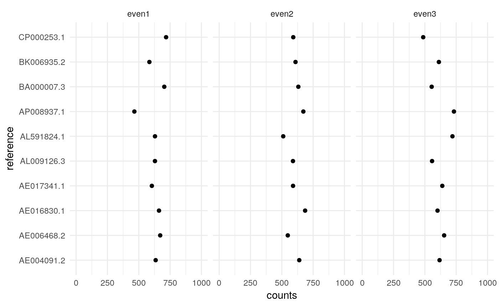

Reference counting
One basic anaylisis we want to perform is to count the abundance of some references in our data. Here reference is a broad term and may refer to transcripts, genomes, or amplicon sequences contained in a reference database.
For this mbtools implements a general purpose expectation maximization (EM) counter. It is implemented in C++ to perform fast and usually reading the alignment file takes longer than the actual analysis.
## Registered S3 methods overwritten by 'ggplot2':
## method from
## [.quosures rlang
## c.quosures rlang
## print.quosures rlang## Registered S3 method overwritten by 'R.oo':
## method from
## throw.default R.methodsS3## Also loading:## - dada2=1.12.1
## - data.table=1.12.2
## - ggplot2=3.1.1
## - magrittr=1.5
## - phyloseq=1.28.0
## - ShortRead=1.42.0
## - yaml=2.2.0## Found tools:## - minimap2=2.15-r905
## - slimm=0.3.4
## - samtools=1.9##
## Attaching package: 'mbtools'## The following object is masked _by_ 'package:BiocGenerics':
##
## normalizeAlignment
Let’s start by aligning our short read data to a reference database of 10 microbial genomes.
fi <- system.file("extdata/shotgun", package = "mbtools") %>%
find_read_files()
ref <- system.file("extdata/genomes/zymo_mock.fna.gz",
package = "mbtools")
alns <- align_short_reads(
fi,
threads = 3,
reference = ref,
use_existing = FALSE)## INFO [2019-05-25 22:31:01] Aligning 3 samples on 3 threads. Keeping up to 100 secondary alignments.
## INFO [2019-05-25 22:31:03] Finished aligning even1.
## INFO [2019-05-25 22:31:05] Finished aligning even2.
## INFO [2019-05-25 22:31:07] Finished aligning even3.EM counting
Counting is yet again a workflow and requires an alignment artifact and a configuration.
config <- config_count(
reference = system.file("extdata/genomes/zymo_mock.fna.gz",
package = "mbtools"),
threads = 1,
weights = TRUE
)
config## $reference
## [1] "/home/cdiener/R/x86_64-pc-linux-gnu-library/3.6/mbtools/extdata/genomes/zymo_mock.fna.gz"
##
## $threads
## [1] 1
##
## $method
## [1] "em"
##
## $maxit
## [1] 1000
##
## $cutoff
## [1] 0.01
##
## $tpm
## [1] FALSE
##
## $weights
## [1] TRUE
##
## attr(,"class")
## [1] "config"And we can proceed to counting:
## INFO [2019-05-25 22:31:08] Getting reference lengths from /home/cdiener/R/x86_64-pc-linux-gnu-library/3.6/mbtools/extdata/genomes/zymo_mock.fna.gz...
## INFO [2019-05-25 22:31:08] Normalized IDs. Starting counting...
## INFO [2019-05-25 22:31:09] [alignments/even1.bam] Read 16941 alignments.
## INFO [2019-05-25 22:31:09] [alignments/even1.bam] 10 reference seqs. Confidence interval for effective lengths: [2261189.10, 17482265.90].
## INFO [2019-05-25 22:31:09] [alignments/even1.bam] Used 20 EM iterations on 16 equivalence classes. Last max. abs. change was 0.
## INFO [2019-05-25 22:31:09] [alignments/even2.bam] Read 16804 alignments.
## INFO [2019-05-25 22:31:09] [alignments/even2.bam] 10 reference seqs. Confidence interval for effective lengths: [2261189.10, 17482265.90].
## INFO [2019-05-25 22:31:09] [alignments/even2.bam] Used 20 EM iterations on 12 equivalence classes. Last max. abs. change was 1.1e-13.
## INFO [2019-05-25 22:31:09] [alignments/even3.bam] Read 17518 alignments.
## INFO [2019-05-25 22:31:09] [alignments/even3.bam] 10 reference seqs. Confidence interval for effective lengths: [2261189.10, 17482265.90].
## INFO [2019-05-25 22:31:10] [alignments/even3.bam] Used 20 EM iterations on 20 equivalence classes. Last max. abs. change was 0.This creates a count artifact which contains the counts.
## reference counts effective_length sample
## 1: AE004091.2 634.6013 6264306 even1
## 2: AE006468.2 670.7276 4857352 even1
## 3: AE016830.1 661.1689 3217933 even1
## 4: AE017341.1 604.1535 19052864 even1
## 5: AL009126.3 628.9533 4215508 even1
## 6: AL591824.1 629.2075 2944430 even1
## 7: AP008937.1 464.5825 2098587 even1
## 8: BA000007.3 703.2698 5498480 even1
## 9: BK006935.2 584.4928 12072428 even1
## 10: CP000253.1 717.8430 2821263 even1
## 11: AE004091.2 638.9606 6264306 even2
## 12: AE006468.2 547.4441 4857352 even2
## 13: AE016830.1 685.7530 3217933 even2
## 14: AE017341.1 589.4761 19052864 even2
## 15: AL009126.3 588.7936 4215508 even2
## 16: AL591824.1 511.0285 2944430 even2
## 17: AP008937.1 671.5862 2098587 even2
## 18: BA000007.3 631.6744 5498480 even2
## 19: BK006935.2 609.1436 12072428 even2
## 20: CP000253.1 591.1398 2821263 even2
## 21: AE004091.2 617.1627 6264306 even3
## 22: AE006468.2 653.7045 4857352 even3
## 23: AE016830.1 600.9731 3217933 even3
## 24: AE017341.1 639.0245 19052864 even3
## 25: AL009126.3 557.3735 4215508 even3
## 26: AL591824.1 720.0680 2944430 even3
## 27: AP008937.1 732.0089 2098587 even3
## 28: BA000007.3 554.3010 5498480 even3
## 29: BK006935.2 611.6976 12072428 even3
## 30: CP000253.1 486.6862 2821263 even3
## reference counts effective_length sampleIn each sample we have 10 microbes with the same abundance.
ggplot(cn$counts, aes(x=counts, y=reference)) +
geom_point() + xlim(0, 1000) +
facet_wrap(~ sample) + theme_minimal()
Looks ok, but there is a lot of noise since we have very low depth.

We could also compare that with a naive counting method that just uses the best alignment score. In our case that will perform equally since we have little multi-mapping here.
## INFO [2019-05-25 22:31:10] Getting reference lengths from /home/cdiener/R/x86_64-pc-linux-gnu-library/3.6/mbtools/extdata/genomes/zymo_mock.fna.gz...
## INFO [2019-05-25 22:31:10] Normalized IDs. Starting counting...
## INFO [2019-05-25 22:31:11] [alignments/even1.bam] Read 16941 alignments.
## INFO [2019-05-25 22:31:11] [alignments/even1.bam] 10 reference seqs. Confidence interval for effective lengths: [2261189.10, 17482265.90].
## INFO [2019-05-25 22:31:11] [alignments/even2.bam] Read 16804 alignments.
## INFO [2019-05-25 22:31:11] [alignments/even2.bam] 10 reference seqs. Confidence interval for effective lengths: [2261189.10, 17482265.90].
## INFO [2019-05-25 22:31:11] [alignments/even3.bam] Read 17518 alignments.
## INFO [2019-05-25 22:31:11] [alignments/even3.bam] 10 reference seqs. Confidence interval for effective lengths: [2261189.10, 17482265.90].counts <- cn$counts[cn2$counts, on = c("sample", "reference", "effective_length")]
ggplot(counts, aes(x = counts, y = i.counts)) +
geom_point() + geom_smooth(method = "lm") +
labs(x = "em", y = "naive") + theme_classic()
As we see they both give the same results for that simple case.